JANUARY
Tet Holiday Festival
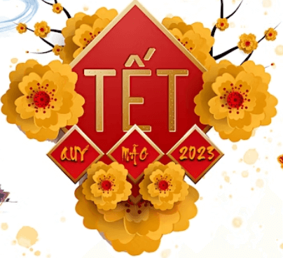
Celebrating the Vietnamese New Year
January 14, 2023 – January 15, 2023
Vien Giac Buddhist Temple
2208 Mountain Road
Glen Allen
Richmond Jewish Food Festival
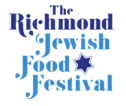
Richmond's 15th Annual Jewish Food Festival
January 15, 2023 – January 16, 2023
Weinstein Jewish Community Center
5403 Monument Avenue
Richmond
FEBRUARY
Richmond Chocolate, Wine & Whiskey Festival
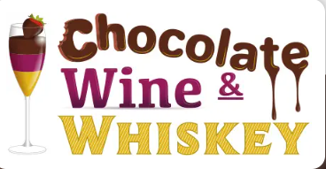
Chocolate, wine and whiskey -- what more can you ask for???
February 11
Main Street Station
Richmond
MARCH
Mobile Soul Sunday
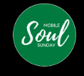
One of my favorite days of the year, celebrating the diversity of black-owned food trucks and caterers
March 5
Location(s) yet to be announced
Richmond
Richmond Black Restaurant Experience
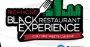
Promoting and celebrating the diveristy of black-owned restaurants throughout the Richmond region
March 6, 2023 - March 12, 2023
Participating restaurants not yet announced
The entire Richmond metropolitan area
Shamrock the Block
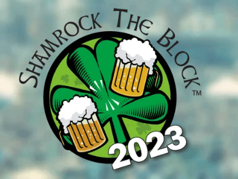
The annual Richmond St. Patrick's party
March 11
Arthur Ashe Boulevard between Leigh Street and Broad Street
Richmond
MAY
Que Pasa Festival
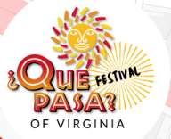
The festival which celebrates Hispanic and Latin American culture, arts and cuisine.
May 6
Canal Walk
Richmond
Lebanese Food Festival
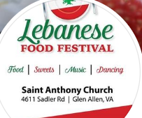
The 38th Annual Lebanese Food Festival
May 19, 2023 - May 21, 2023
St. Anthony Maronite Church
4611 Sadler Road
Glen Allen
JUNE
Broad Appetit
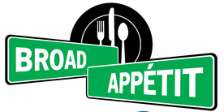
After cancelling the last 3 years due to Covid, one of the most popular festivals in the city returns. Featuring restaurants, music and art, it also serves as a fundraiser for FeedMore.
June 4
Broad Street between Henry and Foushee
Richmond
AUGUST
Carytown Watermelon Festival
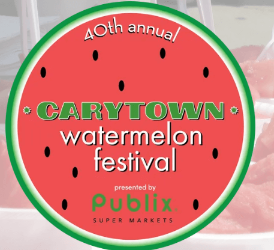
An annual fun tradition, the 41st Carytown Watermelon Festival is a great way to promote all the merchants in Carytown while enjoying a slice of free watermelon
Exact date in August not announced
Cary Street in Carytown
Richmond
SEPTEMBER
Armenian Food Festival
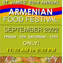
The 63rd annual Armenial Food Festival
Exact date in September has not been announced
St. James Armenian Church
834 Pepper Avenue
Richmond
St. Benedict Oktoberfest
Richmond's Oktoberfest at St. Benedict's Catholic Church
Exact date in September has not been announced
St. Benedict Catholic Church
300 N. Sheppard Street
Richmond
OCTOBER
2nd Street Festival
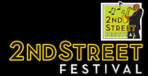
A celebration of the arts, culture and food scene of the Jackson Ward district of Richmond
Exact date in October has not been announced
Second Street in Jackson Ward
Richmond
The Festival of India
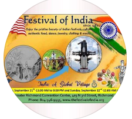
A festival celbrating Indian food, dance, music, clothing, jewelry and culture
October 14, 2023 - October 15,2023
Greater Richmond Convention Center
403 N. Third Street
Richmond